<h1 style = "color:aliceblue">Week 1: 2D Design and Cutting</h1>
<p>Week 1 entailed laser cutting and 2D design, the latter of which took me way too long to learn</p>
<p>The first design I had to make was a simple square with fillets on each end that could be press fit onto one another</p>
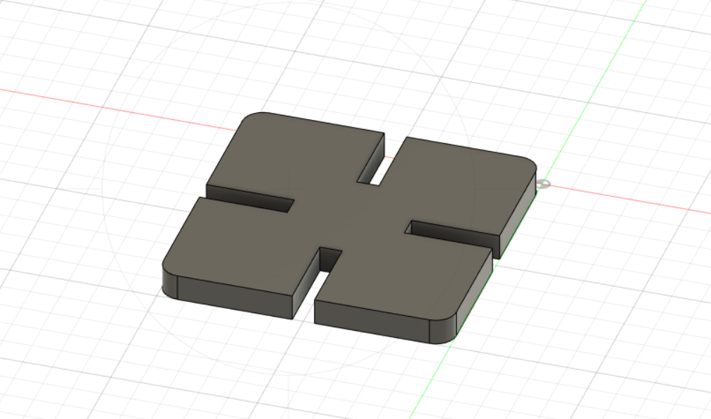
<p>This was pretty difficult as I was still new to Fusion360 and how it worked</p>
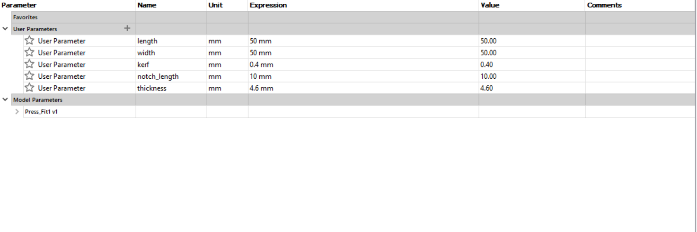
<p>Above are the parameters for the project, which was done by drawing a 50x50 square</p>
<p>The kerf will be set to 0.4 to account for any lost material and construction lines between the middle of the square horizontally and vertically help get a bearing on the shape</p>
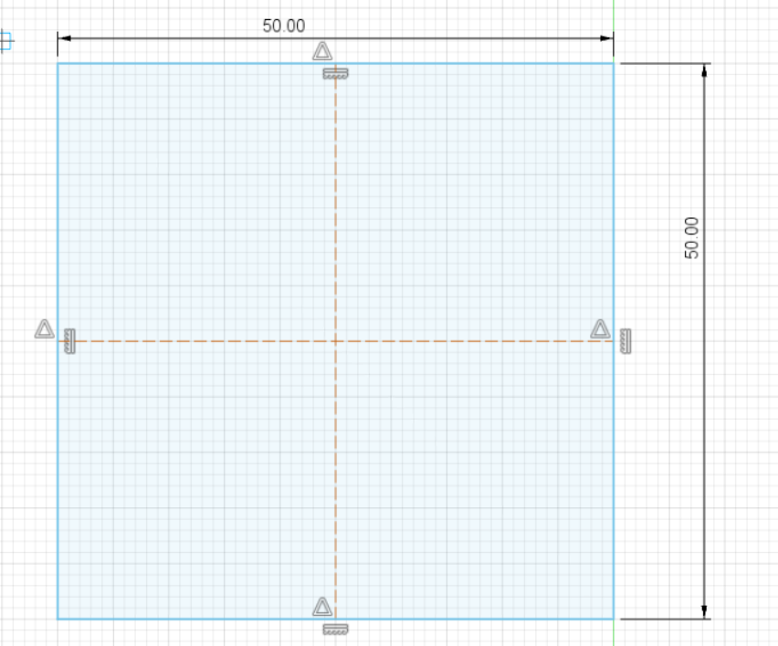
<p>Once thats done you can get started with adding the gaps that will alow for the shape to be press fit</p>
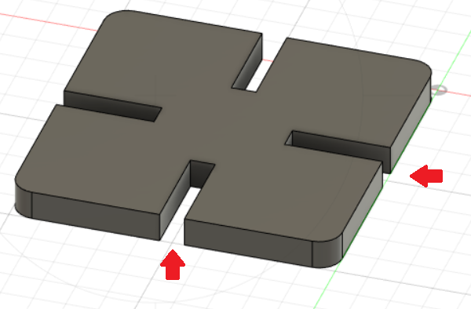
<p>Thats all there is to it though, it wasnt too complicated and allowed me to understand Fusion360 Better</p>
<p>What followed was a series of trial and error that gave me a chance to learn more despite the frustration</p>
<p>I decided to work on a pyramid structure. I tried being lazy, but, this ended up being my downfall</p>
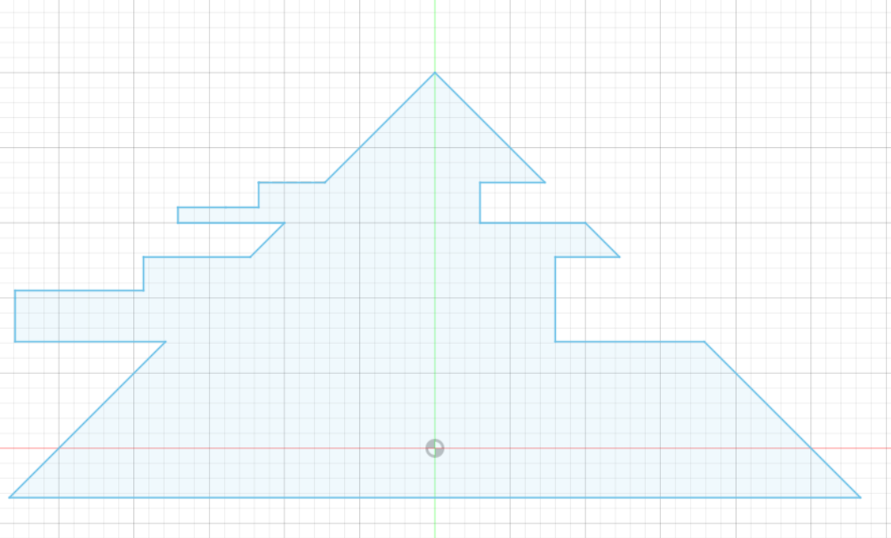
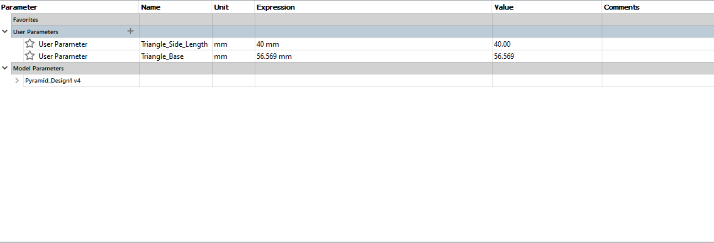
<p>There werent many parameters because of my inexperience, this would be solved in later (working) projects</p>
<p>I had tried to only make out the shape of one face which would have rods on the left end to fit onto the slots on the right</p>
<p>This idea would have worked, had I thought about the fact that triangles are not squares and arent the same on each side, this means that the slots couldnt even connect with the rods</p>
<p>Looking back now, having finished all of my following projects a design that would have worked would have looked like this:</p>
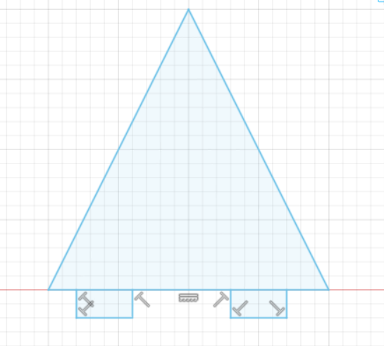
<p>This working design would have a base with gaps to allow for the pyramid faces to latch on and create the desired shape</p>
<p>I was pretty dissapointed because my time was running out and I didnt have any other great ideas, so I decided to make something easy, a cube</p>
<p>Me, in my profound wisdom thought this would be the easiest shape to make</p>
<p>Sadly, the files for my making of the cube got lost, but it involved two different squares, which would fit into one another</p>
<p>The idea didnt work out though, as I forgot to account for the fact that more than two of the faces would have to be differect</p>
<p>The end result? A simple little creature I fittingly named Gary:</p>
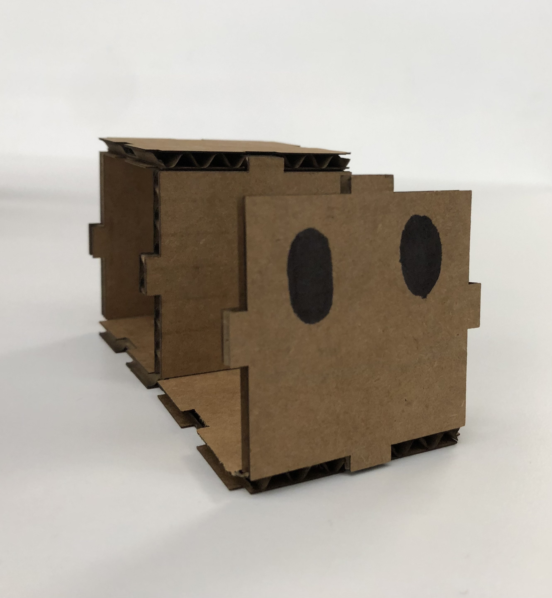
<p>Important final step - make sure you draw eyes with sharpie</p>
<p>More importantly, although I loved Gary and his simplicity I wasn't content with the work I had done, so I decided to get back to work</p>
<p>My next design was originally meant to be a tower, a circular base which extended up with pillars supporting one circle on top of another</p>
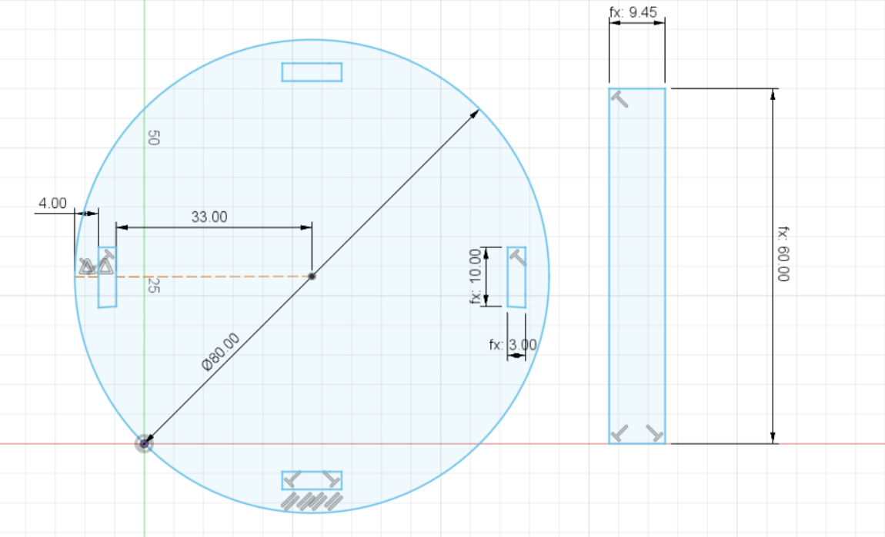
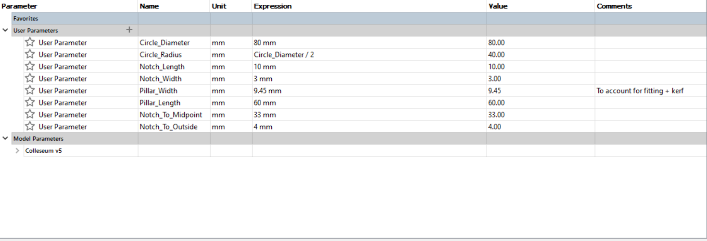
<p>This design finally worked and I couldnt have been more happy about it, however, I was unable to stack more as I had not accounted for the fact that the pillars cant just be stacked on top of eachother, so I guess its sort of just like a wheel</p>
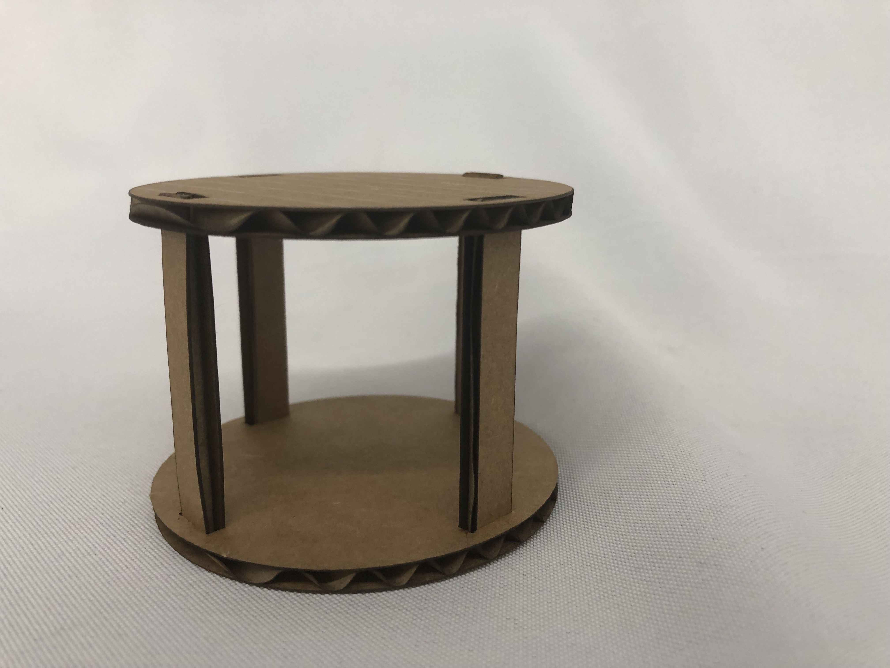
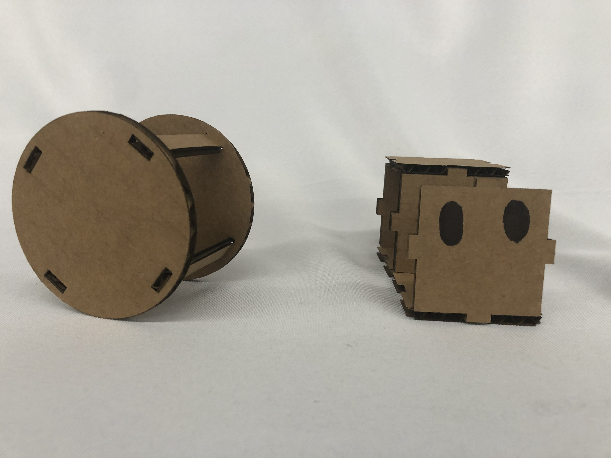
<p>Then it became time to start working on things that werent press fit, just normal models</p>
<p>I decided it would be an interesting challenge to try and create a desk with a cupboard, (which would prove surprisingly challenging)</p>
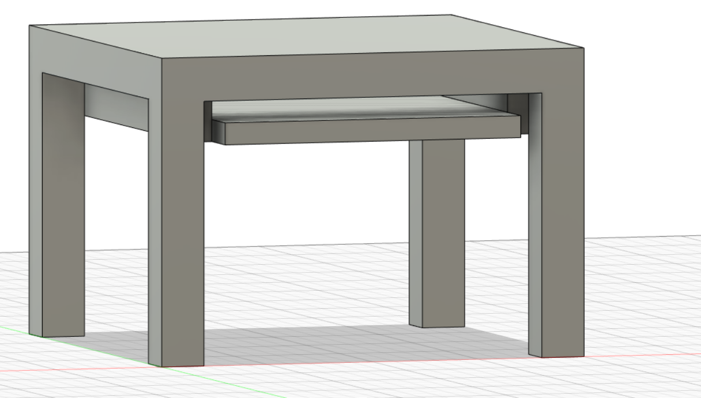
<p>I didnt take enough pictures of my process working on the table however it boiled down to making the legs and then progressing onto the top and finishing with the cupboard</p>
<img src = "Table_parameters.PNG">
<p>For some reason, there were conflicts with creation equations for the area of the top and cupboard so I just had to write them out plainly</p>
<p>The final result after adding a material to the table ended up looking like this:</p>
<img src = "finished table.PNG">
<img src = "finished table 2.PNG">
<p>Working on the table was honestly a very challenging experience which frustrated me at first but in retrospect helped me learn a lot about Fusion360</p>
<p>If there was something I would like to go back and change it would definitely be to learn how to create creases and other aspects which would allow me to make more detailed cupboards, shelves, etc</p>
<p>Moving on, at my (so far) brief stay at harvard ive developed a liking to playing the piano. Now, in the music room I noticed a stand for sheet music which I thought would be an interesting challenge to model as it would involve using different angles, not just blocks</p>
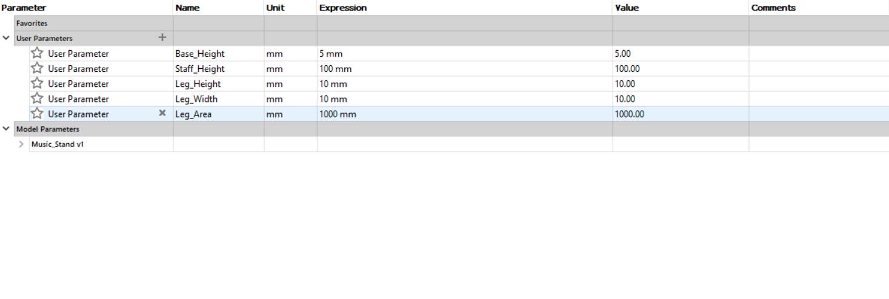
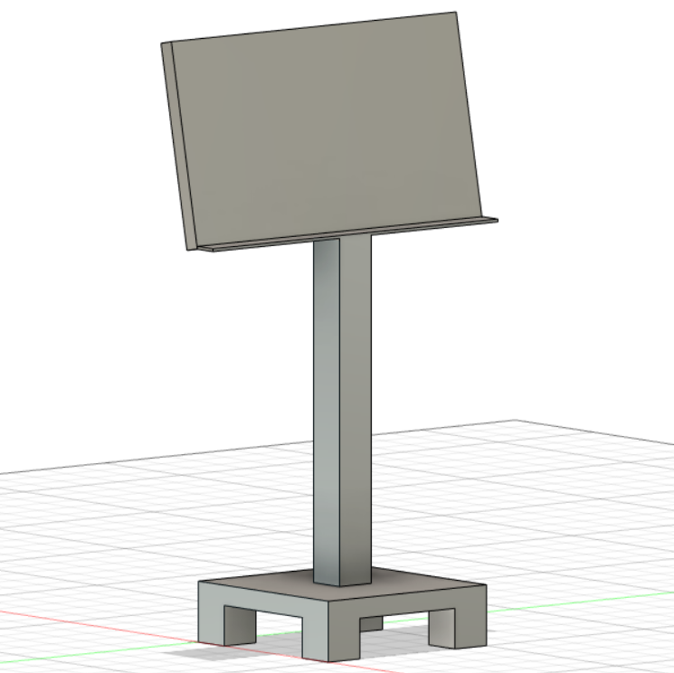
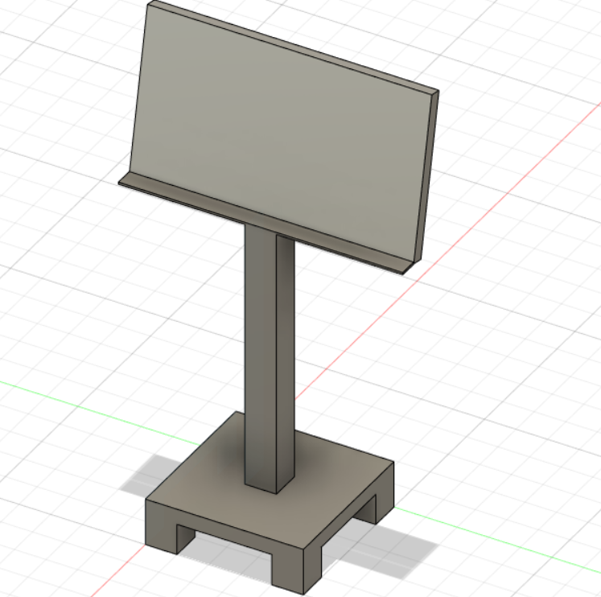
<p>To be honest, making 3 different angles for different parts of the stand seemed challenging at first but with a bit of thought can be done in a sort of roundabout way</p>
<p>What you do is you create 2, 3 point rectangles, for the different sections of the stand and then extrude them accordingly</p>
<p>If I were to come back to this project I would definitely try and figure out a way to make the legs angular as well, this gave me a lot of headache and sadly I still didnt come up with an answer. Hoping to figure this out in the future</p>
<p>Lastly, after following a tutorial on youtube I finally learned how to use arcs and other line drawing features to make more intricate designs</p>
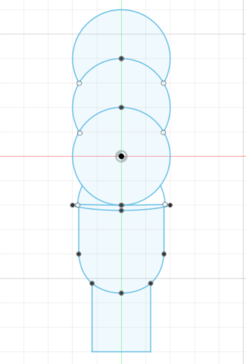
<p>It was honestly a bit of a silly 2D model but I thought it was fun experimenting with different tools in Fusion360 and a good way to finish off the first week</p>